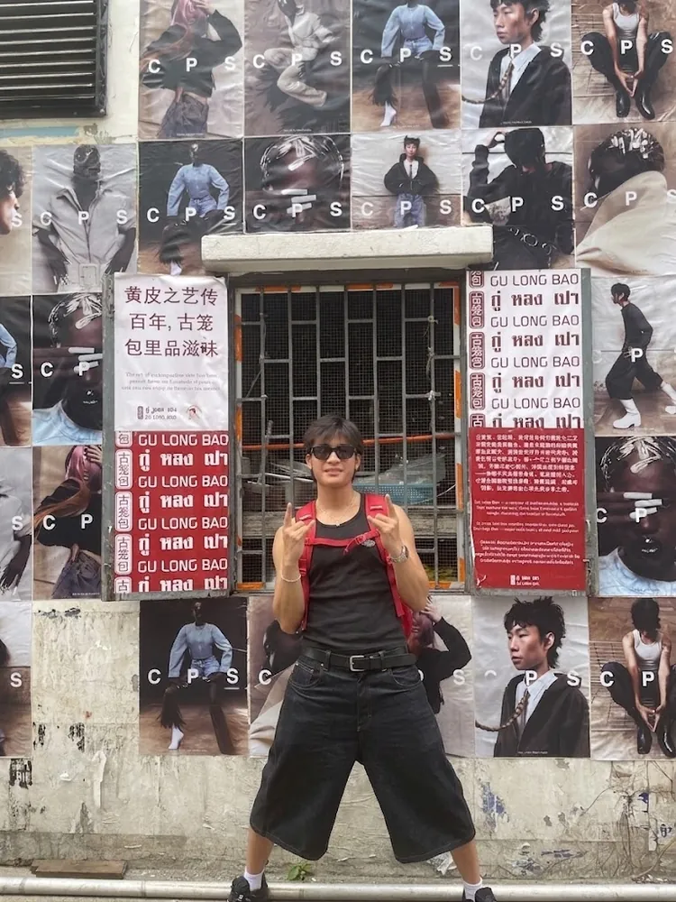

About
I grew up in Washington, D.C., and now live in Boston, where I study biology with a minor in psychology at Northeastern University.
I lead Skinapse AI Lab, a venture developing AI tools for skin health, and I am a scout at Boston Square Ventures. I have done research with Yale School of Medicine, Mayo Clinic School of Medicine, and Harvard Medical School, and I am interested in helping healthcare startups build and scale.
Outside of work, I sing, play guitar, DJ, powerlift, and box as an amateur.
I am always glad to hear from students, researchers, and founders. Send me an email.
